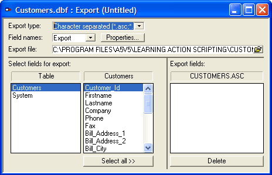
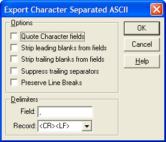
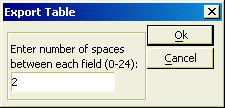
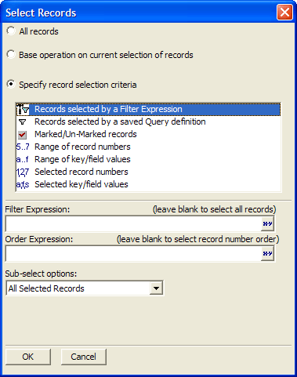
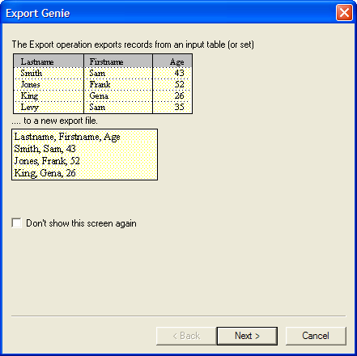
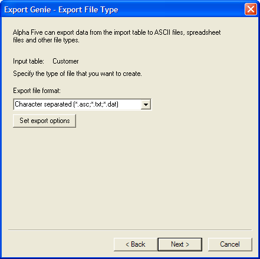
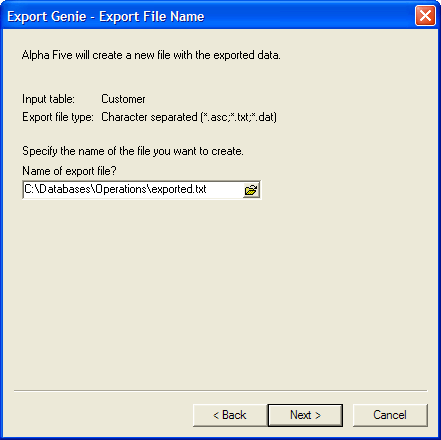
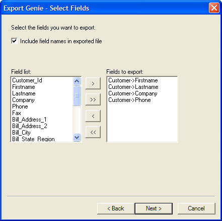
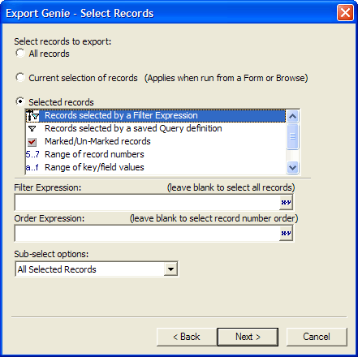
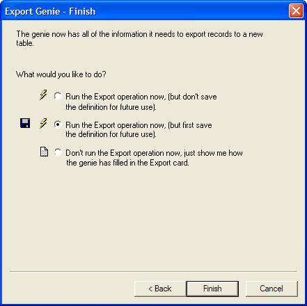

Export Operations
Overview of the Export Process
The Export operation takes data from a table or set and converts it to a different file-format, letting you use your data in other applications.
 Note : When you run
an Export Operation for a set which has one-many child tables, if no fields
from the one-many child tables are included in the Export definition,
Alpha Anywhere only exports one instance of each parent record.
Note : When you run
an Export Operation for a set which has one-many child tables, if no fields
from the one-many child tables are included in the Export definition,
Alpha Anywhere only exports one instance of each parent record.
For example, one of the most common formats is a comma-delimited ASCII file. By using an Export operation you can export data from a table containing names and addresses and export it to ASCII.
|
Customer ID |
Name |
Telephone No |
|
001 |
Adams |
555-8211 |
|
002 |
Baker |
555-2211 |
|
003 |
Pertwee |
555-8765 |
|
004 |
Phillips |
555-4567 |
 Note : Microsoft
Access reads .DBF file formats, so there is no need to perform
an export operation to move data to it.
Note : Microsoft
Access reads .DBF file formats, so there is no need to perform
an export operation to move data to it.
The output file (below) has a different record on each row, and fields are enclosed in quotation marks and separated by commas. This is a standard format used by many applications.
|
"001","Adams","555-8211" |
Performing an Export Operation
Click the Operations tab on the Control Panel.
Click the New button. The Create New Operation dialog box appears.
Select "Export" as the operation, and select the table you want to copy.
Click the Create button to display the Export Builder or click Create Using Genie to display the Export Genie (see Using the Export Genie ).

Export Builder
Choose an Export Type. The following types are supported:
Rich Text File (*.RTF)
MS Excel V3.0 (*.XLS)
MS Excel V4.0 (*.XLS)
Lotus 123 V1.0/1A (*.WKS)
Lotus 123 V2.0 (*.WK1)
Lotus 123 V3.0 (*.WK3)
Symphony V1.0 (*.WRK)
Symphony V1.1 (*.WR1)
Fill in the export settings.
Select whether to "Export" or "Omit" the Field Names.
Export Settings
When exporting data to an ASCII file, Alpha Anywhere allows you to set various options to determine the structure of the result file.
Character-Separated ASCII File Settings
The format for a Character-Separated ASCII file can vary. The default format is a comma-delimited file, with character fields in quotation marks, and a carriage return and line feed to separate records.

Export Settings for Character-Separated ASCII
You can adjust the following export settings:
Quote Character fields : When you export character fields, you can enclose the data values in quotation marks. This is a standard way of exporting these fields.
Strip leading blanks from fields : Character fields in your database may have blank spaces at the beginning. If you do not want leading blanks included in the ASCII file, check this box.
Strip trailing blanks from fields : Character fields in your database may have blank spaces at the end of them. If you do not want trailing blanks included in the ASCII file, check this box.
Suppress trailing separators : This option controls whether a field separator is placed at the end of the last field, and whether a record separator is placed at the end of the last record.
Delimiters : Delimiter characters denote the end of fields and records. The field delimiter is usually a comma, and the record delimiter is typically a carriage return and line feed. However, you can specify different delimiters.
When exporting to an ASCII file, Alpha Anywhere places data in columns. By default two spaces are inserted between each column, however you can change this to a different number. The valid range is between 0 and 24. To set a number besides 2, click the Export Settings button. In the Export Table dialog box, type in the number of spaces you want to insert.
Click the Properties... button or the
 button on the toolbar and set the appropriate
configuration options.
button on the toolbar and set the appropriate
configuration options.

Export Settings for a Table ASCII
Click OK to continue or Cancel to discard your inputs.
Enter a name for the resulting file in the Export file field.
Choosing the Fields to Export
At the bottom of the window are list boxes used for selecting the fields to include in the result table. The Export Fields list box on the right displays the fields currently selected for inclusion.
To add a field to the list, double click a field, or drag it to the Export Fields list box. To copy all of the fields in a particular table, click the Select All button. To remove fields from the Export Fields list box, select a field and press Delete.
Select Records
Optionally, click the
 button on the toolbar to open the Select
Records dialog box and change the record selection.
button on the toolbar to open the Select
Records dialog box and change the record selection.

Select Records Dialog Box
Click the
 button to run the operation.
button to run the operation.
Click Next > to continue.

Select the Export file format.
Optionally, click Set export options to modify export parameters.
Click Next > to continue.

Enter the Name of the export file.
Click Next > to continue.

Optionally, click the Include field names check box.
Move the fields that you wish to export from the Field list to the Fields to export list.
Click Next > to continue.

Indicate which records to export.
If you clicked the Selected records radio button, make a selection from the list box. Otherwise, continue with step 14.
Enter the filter and order criteria required by your choice.
Click Next > to continue.

Indicate whether you want to run the operation now, save the operation and then run it, or view the settings of the Export Builder.
Click Finish.

If you selected Run the Export operation now, (but first save the definition for future use), the Save export settings as... dialog box will appear.
Enter the name of the operation into the Name field and click OK.
If you selected Don't run the Export operation now, just show me how the genie has filled in the Export Builder, the Export Builder will appear.
Optionally, click Save to display the Save export settings as... dialog box.
Enter the name of the operation into the Name field and click OK.
Optionally, click the Run button on the toolbar to run the operation.
See Also
Overview of Batch Operations, Table Operation Methods